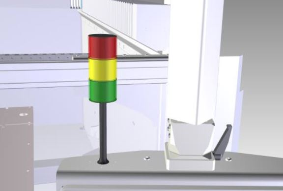
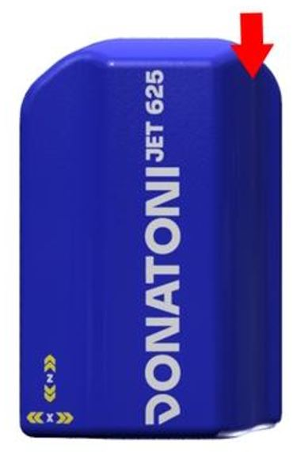
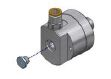
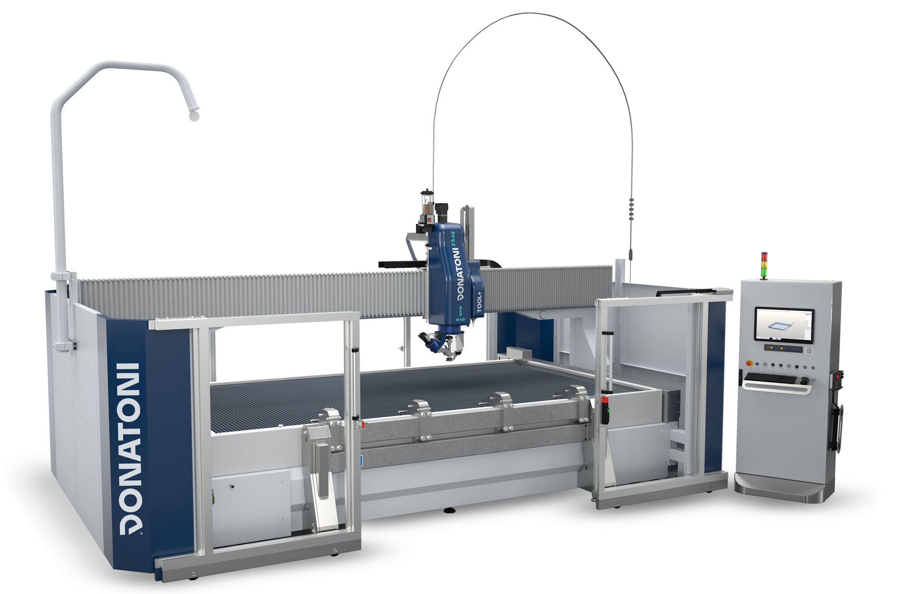
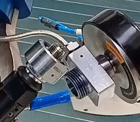
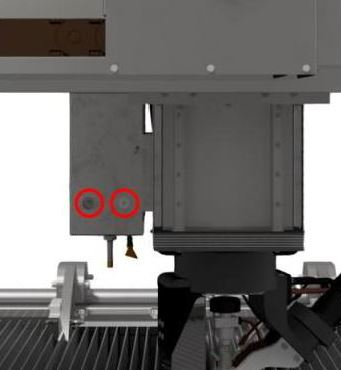
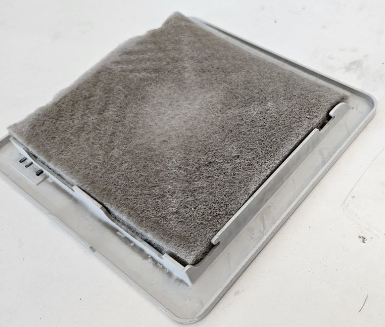
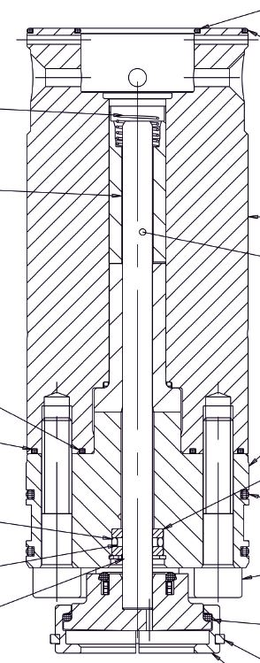

Konserwacja
Niniejszy dokument opisuje procedury konserwacji bieżącej i nadzwyczajnej maszyn Donatoni oraz zawiera wskazówki dotyczące prawidłowego wykonywania kontroli, sprawdzeń i zaplanowanych czynności serwisowych.
Celem jest utrzymanie sprawności i niezawodności maszyny, zapobieganie ewentualnym nieprawidłowościom oraz ograniczenie ryzyka nieplanowanych przestojów.
- STANDARDOWE FREZARKI
- TABELA PORÓWNAWCZA ŚRODKÓW SMARNYCH
- MN0001 TEST OBWODU ZATRZYMANIA AWARYJNEGO
- MN0002 COMIESIĘCZNA KONSERWACJA POMPY PRÓŻNIOWEJ
- MN0003 TEST DZIAŁANIA SYGNALIZATORA ŚWIETLNEGO
- MN0004 SMAROWANIE PROWADNIC LINIOWYCH SYSTEMU MOVE
- MN0005 SMAROWANIE ŁOŻYSKA NAKRĘTKI OSI Z
- MN0006 SMAROWANIE ŁOŻYSK WAŁU NAPĘDOWEGO MOSTU OSI Y
- MN0007 KONTROLA ŚRODKA SMARNEGO UKŁADU AUTOMATYCZNEGO SMAROWANIA
- MN0008 SMAROWANIE PRZEGUBÓW STOŁU UCHYLNEGO
- MN0009 SMAROWANIE PRZEGUBU RAMIENIA KONSOLI
- MN0010 KONTROLA PRZEWODÓW I ZŁĄCZY UKŁADU HYDRAULICZNEGO
- MN0011 WYMIANA OLEJU W AGREGACIE HYDRAULICZNYM
- MN0012 CZYSZCZENIE FILTRÓW SZAFY ELEKTRYCZNEJ
- MN0013 KONSERWACJA ZESPOŁU WLOTU SPRĘŻONEGO POWIETRZA
- MN0014 ŁOŻYSKA ELEKTROWRZECIONA
- MN0041 SMAROWANIE PROWADNIC LINIOWYCH BOCZNEGO WRZECIONA TOOL PLUS
- MN0042 CZYSZCZENIE FILTRA UKŁADU PNEUMATYCZNEGO
- MN0043 KONTROLA SZCZELNOŚCI ZŁĄCZA OBROTOWEGO
- WATERJET
- MN0044 WYMIANA KRYZY
- MN0045 SMAROWANIE RĘCZNE
- MN0039 CZYSZCZENIE FILTRÓW OTWORÓW WENTYLACYJNYCH SZAFY ELEKTRYCZNEJ
- MN0015 KONTROLA PRZEWODÓW I ZŁĄCZY UKŁADU WYSOKIEGO CIŚNIENIA
- MN0030 KONTROLA ŚRODKA SMARNEGO UKŁADU AUTOMATYCZNEGO SMAROWANIA
- MN0016 KONTROLA CZYSTOŚCI ZBIORNIKA I OPRÓŻNIANIE
- MN0035 KONTROLA JAKOŚCI WODY
- MN0040 KONSERWACJA ZESPOŁU WLOTU SPRĘŻONEGO POWIETRZA
- POMPA BFT
- POMPA DONATONI HYDROX
- POMPA HYPERTHERM
- ZESPÓŁ ZAWORU GRZYBKOWEGO WYSOKIEGO CIŚNIENIA
- MN0029 NAPRAWA ZAWORU ODPOWIETRZAJĄCEGO
- MN0017 NAPRAWA ZAWORÓW ZWROTNYCH I ZAWORÓW GRZYBKOWYCH NISKIEGO CIŚNIENIA
- MN0018 NAPRAWA CYLINDRA WYSOKIEGO CIŚNIENIA
- MN0019 WYMIANA WKŁADU ELEMENTU USZCZELNIAJĄCEGO WYSOKIEGO CIŚNIENIA
- MN0021 WYMIANA ZAWORU GRZYBKOWEGO NISKIEGO CIŚNIENIA
- MN0022 ODWRÓCENIE CYLINDRA WYSOKIEGO CIŚNIENIA
- MN0023 WYMIANA CYLINDRA WYSOKIEGO CIŚNIENIA
- MN0024 WYMIANA ZESPOŁU ZAWORU ZWROTNEGO
- MN0025 WYMIANA ZESPOŁU OBUDOWY ELEMENTU USZCZELNIAJĄCEGO
- MN0026 WYMIANA ADAPTERA WYLOTOWEGO
- MN0028 NAPRAWA CENTRALNEJ SEKCJI HYDRAULICZNEJ
- MN0034 WYMIANA FILTRA WODY
- MN0031 WYMIANA KORPUSU ZAWORU ODPOWIETRZAJĄCEGO
- MN0032 CZYSZCZENIE CHŁODNICY POWIETRZNEJ
- MN0036 WYMIANA WKŁADU FILTRA HYDRAULICZNEGO
- MN0037 WYMIANA PŁYNU HYDRAULICZNEGO
- MN0038 SMAROWANIE ŁOŻYSK SILNIKA GŁÓWNEGO
- MN0020 WYMIANA ZESPOŁU ZAWORU GRZYBKOWEGO WYSOKIEGO CIŚNIENIA
- MN0047 WYMIANA RURKI OGNISKUJĄCEJ
- MN0053 WYMIANA PRZEWODU ŚCIERNIWA
- INSTRUKCJE BEZPIECZEŃSTWA
Lista standardowych czynności konserwacyjnych dla frezarki typu JET625


Przed przystąpieniem do czynności należy uważnie przeczytać | |
Interwał200 godzin pracy | Stopień złożoności czynnościLow01 / 05 |
Osoba upoważnionaOperator maszyny | Wymagane ŚOI:  |
Wideo
Procedura
Przy włączonej maszynie, przygotowanej do pracy w trybie dostępu do strefy niebezpiecznej, nacisnąć przycisk zatrzymania awaryjnego i sprawdzić:
Czy na monitorze panelu sterowania wyświetlany jest stan „AKTYWNE ZATRZYMANIE AWARYJNE
Czy zapala się czerwony segment sygnalizatora świetlnego znajdującego się na panelu sterowania.
Czy podczas próby wykonania dowolnego ruchu jednej z osi maszyny za pomocą dźwigni wymagających ciągłego podtrzymania na panelu sterowania wewnątrz maszyny nie następuje żaden ruch.
Przywrócić działanie maszyny i sprawdzić:
Czy z monitora panelu sterowania znika komunikat „AKTYWNE ZATRZYMANIE AWARYJNE”.
Czy gaśnie czerwony segment sygnalizatora świetlnego znajdującego się na panelu sterowania.
Czy podczas wykonywania dowolnego ruchu jednej z osi maszyny za pomocą dźwigni wymagających ciągłego podtrzymania na panelu sterowania wewnątrz maszyny następuje odpowiadający mu ruch
Przed przystąpieniem do czynności należy uważnie przeczytać | |
Interwałco tydzień; co miesiąc | Stopień złożoności czynnościLow01 / 05 |
Osoba upoważnionaOperator maszyny | Wymagane ŚOI:  |
Wideo
Procedura
Utrzymanie pompy próżniowej w dobrym stanie zależy od czystości wody w instalacji wodnej. Nabywca jest odpowiedzialny za zapewnienie, aby parametry używanej wody były zgodne z wymaganiami podanymi w instrukcji obsługi i konserwacji producenta pompy.
Co tydzień:
Sprawdzić, czy poziom wody w zbiorniku sięga poziomu rury przelewowej.
W przypadku sporadycznego korzystania z układu próżniowego raz w tygodniu uruchomić pompę próżniową za pomocą polecenia aktywacji próżni (patrz sekcja B instrukcji „Instrukcja użytkowania” dołączonej do niniejszego podręcznika).
Co miesiąc:
Dokładnie wyczyścić zbiornik, usuwając ewentualne osady nagromadzone na dnie.
Szczegółowe informacje dotyczące konserwacji pompy próżniowej znajdują się w instrukcji obsługi i konserwacji.
120113044828_Manuale_Vuoto_Italiano.pdf
Przed przystąpieniem do czynności należy uważnie przeczytać | |
Interwał— | Stopień złożoności czynnościLow01 / 05 |
Osoba upoważnionaOperator maszyny | Wymagane ŚOI:  |
Obrazy

Procedura
Test pomarańczowego segmentu sygnalizatora świetlnego:
Przygotować maszynę do pracy w trybie dostępu do strefy niebezpiecznej zgodnie z opisem w rozdziale — TRYB DOSTĘPU DO STREFY NIEBEZPIECZNEJ — i sprawdzić, czy pomarańczowy segment sygnalizatora świetlnego świeci w trybie migającym.
Przygotować maszynę do pracy w „trybie wolnym” (patrz sekcja B instrukcji „Instrukcja użytkowania” dołączonej do niniejszego podręcznika) i sprawdzić, czy pomarańczowy segment sygnalizatora świetlnego świeci światłem ciągłym.
Test zielonego segmentu sygnalizatora świetlnego:
Przygotować maszynę do pracy w trybie roboczym zgodnie z opisem w rozdziale — TRYB ROBOCZY — wykonać dowolny ruch jednej z osi maszyny za pomocą dźwigni wymagających ciągłego podtrzymania na panelu sterowania (patrz sekcja B instrukcji „Instrukcja użytkowania” dołączonej do niniejszego podręcznika) i sprawdzić, czy podczas ruchu zielony segment sygnalizatora świetlnego miga.
Test czerwonego segmentu sygnalizatora świetlnego:
Nacisnąć przycisk zatrzymania awaryjnego na panelu sterowania i sprawdzić, czy czerwony segment sygnalizatora świetlnego miga.
UWAGA: aby przywrócić działanie maszyny, postępować zgodnie z opisem w instrukcji.
Przed przystąpieniem do czynności należy uważnie przeczytać | |
Interwałco 300 godzin pracy | Stopień złożoności czynnościLow01 / 05 |
Osoba upoważnionaOperator maszyny | Wymagane ŚOI:  |
Wideo
Obrazy

Procedura
Co najmniej co 300 godzin pracy, za pomocą odpowiedniego pistoletu smarowniczego, nasmarować prowadnice liniowe systemu MOVE 1cm3 smaru przez smarowniczki pokazane na rysunku

Przed przystąpieniem do czynności należy uważnie przeczytać | |
Interwałco 300 godzin pracy | Stopień złożoności czynnościLow01 / 05 |
Osoba upoważnionaOperator maszyny | Wymagane ŚOI:  |
Obrazy

Procedura
Co najmniej co 300 godzin pracy, za pomocą odpowiedniego pistoletu smarowniczego, nasmarować łożysko nakrętki osi Z 1 cm3 smaru przez smarowniczkę pokazaną na rysunku
Smarowniczka znajduje się po prawej stronie tulei, pod osłoną pokazaną na rysunku, w położeniu wskazanym i zaznaczonym na ilustracji.


Przed przystąpieniem do czynności należy uważnie przeczytać | |
Interwałco 300 godzin pracy | Stopień złożoności czynnościLow01 / 05 |
Osoba upoważnionaOperator maszyny | Wymagane ŚOI:  |
Wideo
Obraz

Procedura
Co najmniej co 300 godzin pracy, za pomocą odpowiedniego pistoletu smarowniczego, nasmarować łożyska wału napędowego osi Y 1 cm3 smaru przez smarowniczki pokazane na rysunku

Przed przystąpieniem do czynności należy uważnie przeczytać | |
Interwałco 300 godzin pracy | Stopień złożoności czynnościLow01 / 05 |
Osoba upoważnionaOperator maszyny | Wymagane ŚOI:  |
Obrazy

Procedura
Układ automatycznego smarowania składa się z automatycznej jednostki, która smaruje podłączone punkty zgodnie z zaprogramowanymi odstępami czasu.

Zbiornik należy uzupełniać odpowiednim smarem, nie przekraczając wskazanego poziomu maksymalnego.
Co najmniej co 500 godzin pracy sprawdzić poziom smaru w zbiorniku i w razie potrzeby uzupełnić go właściwym rodzajem smaru
UWAGA: alarm na ekranie informuje operatora, gdy poziom smaru w zbiorniku osiągnie minimum i konieczne jest jego uzupełnienie.
Instrukcja właściwa dla urządzenia
Przed przystąpieniem do czynności należy uważnie przeczytać | |
Interwałco 6 miesięcy | Stopień złożoności czynnościLow01 / 05 |
Osoba upoważnionaOperator maszyny | Wymagane ŚOI:  |
Wideo
Obrazy

Procedura
Co najmniej co 6 miesięcy, za pomocą odpowiedniego pistoletu smarowniczego, nasmarować przeguby stołu uchylnego 1cm3 smaru przez smarowniczki pokazane na rysunku.

Przed przystąpieniem do czynności należy uważnie przeczytać | |
Interwał— | Stopień złożoności czynnościLow01 / 05 |
Osoba upoważnionaOperator maszyny | Wymagane ŚOI:  |
Przed przystąpieniem do czynności należy uważnie przeczytać | |
Interwałco rok = 8760 h | Stopień złożoności czynnościLow01 / 05 |
Osoba upoważnionaOperator maszyny | Wymagane ŚOI:  |
Przed przystąpieniem do czynności należy uważnie przeczytać | |
Interwałco 2000 godzin pracy | Stopień złożoności czynnościLow01 / 05 |
Osoba upoważnionaOperator maszyny | Wymagane ŚOI:  |
Wideo
Procedura
Wymianę oleju należy zasadniczo wykonywać co najmniej co 2000 godzin pracy; podczas wymiany należy dokładnie wyczyścić zbiornik.
Opróżnianie odbywa się przez dolny korek (poz. B na rysunku), natomiast płyn należy wlewać do zbiornika przez filtr o dokładności 10 mikronów, przez korek wlewowy (poz. A na rysunku)

Przed przystąpieniem do czynności należy uważnie przeczytać | |
Interwałco 2000 godzin pracy | Stopień złożoności czynnościLow01 / 05 |
Osoba upoważnionaOperator maszyny | Wymagane ŚOI:  |
Procedura
Czynności
Ustawić wyłącznik A w położeniu OFF |  |
Otworzyć drzwiczki D i E |  |
Zdjąć osłonę F i filtr G |  |
Wyczyścić filtr strumieniem sprężonego powietrza H |  |
Zmontować ponownie, wykonując czynności w odwrotnej kolejności |
Przed przystąpieniem do czynności należy uważnie przeczytać | |
Interwał— | Stopień złożoności czynnościLow01 / 05 |
Osoba upoważnionaOperator maszyny | Wymagane ŚOI:  |
Przed przystąpieniem do czynności należy uważnie przeczytać | |
Interwałco 1550 godzin pracy | Stopień złożoności czynnościLow01 / 05 |
Osoba upoważnionaOperator maszyny | Wymagane ŚOI:  |
Przed przystąpieniem do czynności należy uważnie przeczytać | |
Interwałco 300 godzin pracy | Stopień złożoności czynnościLow01 / 05 |
Osoba upoważnionaOperator maszyny | Wymagane ŚOI:  |
Wideo
Procedura
Co najmniej co 300 godzin pracy, za pomocą odpowiedniego pistoletu smarowniczego, nasmarować prowadnice liniowe systemu MOVE 1cm3 smaru przez smarowniczki pokazane na rysunku

Przed przystąpieniem do czynności należy uważnie przeczytać | |
Interwałco 2000 godzin pracy | Stopień złożoności czynnościLow01 / 05 |
Osoba upoważnionaOperator maszyny | Wymagane ŚOI:  |
Wideo
Instrukcje bezpieczeństwa dotyczące tej czynności konserwacyjnej
Przed czyszczeniem filtra rozhermetyzować układ za pomocą zaworu odcinającego zespołu powietrza i zabezpieczyć zawór kłódką.
(Patrz instrukcja producenta
Procedura
Informacje dotyczące konserwacji zespołu wlotu sprężonego powietrza znajdują się w instrukcji obsługi i konserwacji producenta.
Przed wykonaniem czynności konserwacyjnych zamknąć zawór odcinający i zabezpieczyć go kłódką.

Przed przystąpieniem do czynności należy uważnie przeczytać | |
Interwałco 500 godzin pracy | Stopień złożoności czynnościLow01 / 05 |
Osoba upoważnionaOperator maszyny | Wymagane ŚOI:  |
Procedura
Sprawdzić, czy na zewnątrz nie ma śladów wycieku cieczy chłodzącej. W przypadku wycieku wymienić element na odpowiednią część zamienną.
Wymiana
W przypadku wymiany postępować w następujący sposób
Odkręcić korek |  |
|---|---|
Włożyć klucz imbusowy 6mm do otworu centralnego. |  |
Ponownie wkręcić tylny korek. |  |
Obszar czynności konserwacyjnych dostępny z poziomu maszyny dla maszyn typu Waterjet.

Przed przystąpieniem do czynności należy uważnie przeczytać | |
Interwałco 70 godzin pracy | Stopień złożoności czynnościLow01 / 05 |
Osoba upoważnionaOperator maszyny | Wymagane ŚOI:  |
Poluzować (NIE ODŁĄCZAĆ) złącze przewodu wysokiego ciśnienia

Przytrzymując korpus zaworu, odkręcić dolną nakrętkę pierścieniową

Odłączyć i odsunąć zawór

Odkręcić korpus łączący, aby uzyskać dostęp do gniazda kryzy


Za pomocą rurki, szczypiec lub innego odpowiedniego narzędzia wyjąć zużytą kryzę

Włożyć nową kryzę do gniazda, sprawdzając prawidłową orientację (część stożkowa skierowana do góry)

Wyczyścić poszczególne złącza, a przed ich zamocowaniem nałożyć środek przeciwzatarciowy (Blue Goop)

Zmontować ponownie w odwrotnej kolejności, przestrzegając wymaganych momentów dokręcania

Załączone dokumenty
Wideo
Przed przystąpieniem do czynności należy uważnie przeczytać | |
Interwałco 300 godzin pracy | Stopień złożoności czynnościLow01 / 05 |
Osoba upoważnionaOperator maszyny | Wymagane ŚOI:  |
Za pomocą odpowiedniego pistoletu smarowniczego nasmarować wymienione poniżej punkty, stosując 1cm3 smaru EP1:
Prowadnice liniowe bocznego wrzeciona TOOL_

Prowadnice liniowe czujnika płyty

Przepust przekładni osi A

Tabela porównawcza środków smarnych

Przed przystąpieniem do czynności należy uważnie przeczytać | |
Interwałco 2000 godzin pracy | Stopień złożoności czynnościLow01 / 05 |
Osoba upoważnionaOperator maszyny | Wymagane ŚOI:  |
Prawidłowo wyłączyć maszynę i ustawić wyłącznik w położeniu OFF

Zdjąć osłonę, odczepiając ją od dołu i przesuwając do góry


Wyczyścić filtr za pomocą pistoletu pneumatycznego

Zmontować całość ponownie, wykonując czynności w odwrotnej kolejności
Przed przystąpieniem do czynności należy uważnie przeczytać | |
Interwałco 1000 godzin pracy | Stopień złożoności czynnościLow01 / 05 |
Osoba upoważnionaOperator maszyny | Wymagane ŚOI:  |
Procedura
Ustawić maszynę na środku zbiornika. Włączyć pompę i sprawdzić, czy na przewodach wysokiego ciśnienia występują wycieki.
W przypadku wycieku wyłączyć pompę, nacisnąć grzybkowy przycisk zatrzymania awaryjnego i usunąć wyciek, dokręcając złącze właściwym momentem dokręcania.
35 Nm dla złączy 1/4” cala
70 Nm dla złączy 3/8” cala
Następnie zwolnić zatrzymanie awaryjne, włączyć sterowanie i ponownie uruchomić pompę, aby sprawdzić, czy nie występują dalsze wycieki.
Pod poniższym łączem dostępny jest schemat przewodów HP.
Przed przystąpieniem do czynności należy uważnie przeczytać | |
Interwałco 450 godzin pracy | Stopień złożoności czynnościLow01 / 05 |
Osoba upoważnionaOperator maszyny | Wymagane ŚOI:  |
Procedura
Układ automatycznego smarowania składa się z automatycznej jednostki, która smaruje podłączone punkty zgodnie z zaprogramowanymi odstępami czasu
Zbiornik należy uzupełniać odpowiednim smarem, nie przekraczając wskazanego poziomu maksymalnego. Uzupełnianie należy wykonywać przez odpowiednie przyłącze (A na rysunku)

Przed przystąpieniem do czynności należy uważnie przeczytać | |
Interwałzależnie od zużycia ścierniwa | Stopień złożoności czynnościLow01 / 05 |
Osoba upoważnionaOperator maszyny | Wymagane ŚOI:  |
Procedura
Sprawdzić, czy most i inne elementy maszyny nie stykają się z częściami, które mają być przemieszczane
Otworzyć zawór spustowy, aby opróżnić zbiornik

Podnieść ramę listew, używając odpowiednich podpór (masa ramy = 750Kg)

Zdjąć kratki do odzyskiwania elementów
(OPCJONALNIE) Podnieść pojemniki zbierające ścierniwo i opróżnić je. Następnie je wyczyścić i sprawdzić ich stan

Dokładnie wyczyścić zbiornik, usuwając pozostałości ścierniwa
Ponownie umieścić pojemniki zbierające ścierniwo, kratki i stół z listwami
Przed przystąpieniem do czynności należy uważnie przeczytać | |
Interwałco 1000 godzin pracy | Stopień złożoności czynnościLow01 / 05 |
Osoba upoważnionaOperator maszyny | Wymagane ŚOI:  |
Przed przystąpieniem do czynności należy uważnie przeczytać | |
Interwałco 400 godzin pracy | Stopień złożoności czynnościLow01 / 05 |
Osoba upoważnionaOperator maszyny | Wymagane ŚOI:  |
Przed przystąpieniem do czynności należy uważnie przeczytać | |
Interwał— | Stopień złożoności czynnościLow01 / 05 |
Osoba upoważnionaOperator maszyny | Wymagane ŚOI:  |
Przed przystąpieniem do czynności należy uważnie przeczytać | |
Interwał— | Stopień złożoności czynnościLow01 / 05 |
Osoba upoważnionaOperator maszyny | Wymagane ŚOI: |
Przed przystąpieniem do czynności należy uważnie przeczytać | |
Interwałco 150 godzin pracy | Stopień złożoności czynnościLow01 / 05 |
Osoba upoważnionaOperator maszyny | Wymagane ŚOI:  |

Pozycja | Opis | Stopień filtracji |
|---|---|---|
A | Filtr wody z wkładem 9/10" | 5 μm |
B | Filtr wody z wkładem 9/10" | 1 μm |
Kontrola: kiedy należy je wymienić?
Wkłady filtracyjne należy wymienić, gdy spadek ciśnienia w układzie przekroczy 1 bar (gdy różnica ciśnienia między punktem wlotowym X a punktem wylotowym Y wynosi: X-Y > 1 bar)

Procedura wymiany
Odkręcić obudowę filtra za pomocą dostarczonego klucza;

Wyjąć zużyty wkład filtracyjny;
Wyczyścić obudowę filtra (usuwając ewentualne pozostałości lub zanieczyszczenia);
Włożyć nowy wkład filtracyjny (zwrócić uwagę, aby w każdej pozycji zamontować wkład o właściwym stopniu filtracji);
Umieścić obudowę filtra w gnieździe i dokręcić ją kluczem;
Przed przystąpieniem do czynności należy uważnie przeczytać | |
Interwałco miesiąc | Stopień złożoności czynnościLow01 / 05 |
Osoba upoważnionaOperator maszyny | Wymagane ŚOI:  |
Kontrola poziomu oleju silnika pompy
Wyjąć bagnet i sprawdzić poziom.
Sprawdzić również, czy w środku smarnym „Emulsione” nie ma wody procesowej

Kontrola pojemnika na brudną wodę
Jeżeli w pojemniku znajduje się nadmierna ilość cieczy lub emulsji, skontaktować się z serwisem technicznym Donatoni Service srl w celu uzyskania instrukcji lub zaplanowania kontroli układu uszczelniającego pompy tłokowej

Przestrzeń pośrednia pompy wysokiego ciśnienia (kontrola wzrokowa)
Sprawdzić, czy mieszki nie są uszkodzone. W przypadku uszkodzeń skontaktować się z serwisem
W przypadku uszkodzenia mieszka sprawdzić również, czy na tłoczysku
tłoka nie występuje korozja.Sprawdzić, czy w przestrzeni pośredniej znajduje się płyn roboczy; w takim
przypadku skontaktować się z serwisem

Przed przystąpieniem do czynności należy uważnie przeczytać | |
Interwał1 rok lub 4 lata od drugiej wymiany | Stopień złożoności czynnościMedium03 / 05 |
Osoba upoważnionaOperator maszyny | Wymagane ŚOI:  |
Aby uzyskać dostęp do korka zaworu spustowego i króćca wlewowego, otworzyć pokrywę (A) i zdjąć osłonę przednią (C) oraz boczną (B).
Do zebrania oleju potrzebny jest odpowiedni pojemnik o pojemności większej niż 5 litrów.
Umieścić szmatę lub podobny materiał pod korkiem spustowym oleju (E).

Zdjąć korek (D) z króćca wlewu oleju.
Do spuszczenia oleju użyć elastycznego przewodu z dostarczonym odpowiednim złączem gwintowanym. Upewnić się, że otwarty koniec pozostaje wewnątrz przygotowanego pojemnika
Odkręcić korek zaworu spustowego oleju (E). Olej zaczyna wypływać natychmiast po wkręceniu złącza gwintowanego elastycznego przewodu.
Sprawdzić, czy w zużytym oleju występuje emulsja. Jeśli emulsja jest obecna, usunąć wilgoć z obiegu oleju.
Zdjąć elastyczny przewód i wkręcić korek zaworu spustowego oleju (E).
Napełnić skrzynię korbową około 4.3 litra nowego oleju, sprawdzając poziom za pomocą bagnetu.
Klasa lepkości oleju: PAO ISO VG 320.
Na końcu dokumentu znajduje się tabela porównawcza.
 |  |

Przed przystąpieniem do czynności należy uważnie przeczytać | |
Interwał1 rok lub 4 lata od drugiej wymiany | Stopień złożoności czynnościMedium03 / 05 |
Osoba upoważnionaOperator maszyny | Wymagane ŚOI:  |
Patrz strona
MN0049 Wymiana oleju pompy Hydrox
Przed przystąpieniem do czynności należy uważnie przeczytać | |
Interwałco 1500 godzin pracy | Stopień złożoności czynnościCritical05 / 05 |
Osoba upoważnionaService Donatoni | Wymagane ŚOI:  |
Niektóre części pompy podlegają zużyciu; ich konserwację może wykonywać wyłącznie odpowiednio przeszkolony personel.
Czynności konserwacyjne należy wykonywać na głowicy pompy oraz zespole tłok/cylinder. W zależności od liczby przepracowanych godzin należy wymieniać różne podzespoły.
W sprawie konserwacji skontaktować się z serwisem Donatoni


Przed przystąpieniem do czynności należy uważnie przeczytać | |
Interwałco 6000 godzin pracy | Stopień złożoności czynnościCritical05 / 05 |
Osoba upoważnionaService Donatoni | Wymagane ŚOI:  |
Naprężenie pasów musi być ustawione zgodnie z dokładnymi specyfikacjami. W sprawie konserwacji skontaktować się z serwisem Donatoni

Przed przystąpieniem do czynności należy uważnie przeczytać | |
Interwał— | Stopień złożoności czynnościLow01 / 05 |
Osoba upoważnionaOperator maszyny | Wymagane ŚOI:  |
Obrazy
Przed przystąpieniem do czynności należy uważnie przeczytać | |
Interwałco 2000 godzin pracy | Stopień złożoności czynnościLow01 / 05 |
Osoba upoważnionaOperator maszyny | Wymagane ŚOI:  |
Obrazy
Przed przystąpieniem do czynności należy uważnie przeczytać | |
Interwałco 1000 godzin pracy | Stopień złożoności czynnościLow01 / 05 |
Osoba upoważnionaOperator maszyny | Wymagane ŚOI:  |
Obrazy


Przed przystąpieniem do czynności należy uważnie przeczytać | |
Interwałco 500 godzin pracy | Stopień złożoności czynnościLow01 / 05 |
Osoba upoważnionaOperator maszyny | Wymagane ŚOI:  |
Przed przystąpieniem do czynności należy uważnie przeczytać | |
Interwałco 500 godzin pracy | Stopień złożoności czynnościLow01 / 05 |
Osoba upoważnionaOperator maszyny | Wymagane ŚOI:  |
Przed przystąpieniem do czynności należy uważnie przeczytać | |
Interwałco 500 godzin pracy | Stopień złożoności czynnościLow01 / 05 |
Osoba upoważnionaOperator maszyny | Wymagane ŚOI:  |
Przed przystąpieniem do czynności należy uważnie przeczytać | |
Interwałco 1000 godzin pracy | Stopień złożoności czynnościLow01 / 05 |
Osoba upoważnionaOperator maszyny | Wymagane ŚOI:  |
Przed przystąpieniem do czynności należy uważnie przeczytać | |
Interwałco 1500 godzin pracy | Stopień złożoności czynnościLow01 / 05 |
Osoba upoważnionaOperator maszyny | Wymagane ŚOI:  |
Przed przystąpieniem do czynności należy uważnie przeczytać | |
Interwałco 3000 godzin pracy | Stopień złożoności czynnościLow01 / 05 |
Osoba upoważnionaOperator maszyny | Wymagane ŚOI:  |
Przed przystąpieniem do czynności należy uważnie przeczytać | |
Interwałco 3000 godzin pracy | Stopień złożoności czynnościLow01 / 05 |
Osoba upoważnionaOperator maszyny | Wymagane ŚOI:  |
Przed przystąpieniem do czynności należy uważnie przeczytać | |
Interwałco 6000 godzin pracy | Stopień złożoności czynnościLow01 / 05 |
Osoba upoważnionaOperator maszyny | Wymagane ŚOI:  |
Przed przystąpieniem do czynności należy uważnie przeczytać | |
Interwałco 6000 godzin pracy | Stopień złożoności czynnościLow01 / 05 |
Osoba upoważnionaOperator maszyny | Wymagane ŚOI:  |
Przed przystąpieniem do czynności należy uważnie przeczytać | |
Interwałco 12000 godzin pracy | Stopień złożoności czynnościLow01 / 05 |
Osoba upoważnionaOperator maszyny | Wymagane ŚOI:  |
Przed przystąpieniem do czynności należy uważnie przeczytać | |
Interwałco 1000 godzin pracy | Stopień złożoności czynnościLow01 / 05 |
Osoba upoważnionaOperator maszyny | Wymagane ŚOI:  |
Przed przystąpieniem do czynności należy uważnie przeczytać | |
Interwałco 3000 godzin pracy | Stopień złożoności czynnościLow01 / 05 |
Osoba upoważnionaOperator maszyny | Wymagane ŚOI:  |
Przed przystąpieniem do czynności należy uważnie przeczytać | |
Interwałco 1000 godzin pracy | Stopień złożoności czynnościLow01 / 05 |
Osoba upoważnionaOperator maszyny | Wymagane ŚOI:  |
Przed przystąpieniem do czynności należy uważnie przeczytać | |
Interwałco 1500 godzin pracy | Stopień złożoności czynnościLow01 / 05 |
Osoba upoważnionaOperator maszyny | Wymagane ŚOI:  |
Przed przystąpieniem do czynności należy uważnie przeczytać | |
Interwałco 3000 godzin pracy | Stopień złożoności czynnościLow01 / 05 |
Osoba upoważnionaOperator maszyny | Wymagane ŚOI:  |
Przed przystąpieniem do czynności należy uważnie przeczytać | |
Interwałco 3000 godzin pracy | Stopień złożoności czynnościLow01 / 05 |
Osoba upoważnionaOperator maszyny | Wymagane ŚOI:  |
Przed przystąpieniem do czynności należy uważnie przeczytać | |
Interwałco 1000 godzin pracy | Stopień złożoności czynnościLow01 / 05 |
Osoba upoważnionaOperator maszyny | Wymagane ŚOI:  |
Przed przystąpieniem do czynności należy uważnie przeczytać | |
Interwałco 100 godzin pracy | Stopień złożoności czynnościLow01 / 05 |
Osoba upoważnionaOperator maszyny | Wymagane ŚOI:  |
Zdjąć czujnik, aby ułatwić demontaż

Obrócić nakrętkę pierścieniową, aby wyjąć rurkę ogniskującą.

Wymienić rurkę ogniskującą na nową, zachowując element dystansowy

Po zamontowaniu nowego elementu złożyć całość i ponownie dokręcić nakrętkę pierścieniową

Ponownie zamontować czujnik płyty

Wykonać pomiar dyszy, aby ustawić prawidłową wartość „Delta Z”
Wideo
Przed przystąpieniem do czynności należy uważnie przeczytać | |
Interwałco 1000 godzin pracy | Stopień złożoności czynnościMedium03 / 05 |
Osoba upoważnionaOperator maszyny | Wymagane ŚOI:  |
Obrócić oś A do 90_, aby uzyskać dostęp do zamknięcia na głowicy
Zdjąć osłonę

Zdjąć osłonę ochronną pod głowicą
Zdjąć uchwyt przewodu
Wyciągnąć przewód od dołu, zapamiętując jego przebieg; nowy przewód należy poprowadzić tą samą trasą
Wprowadzić nowy przewód ścierniwa
Zamocować przewód za pomocą odpowiedniego uchwytu
Ponownie zamknąć osłony, zwracając uwagę na przewody znajdujące się pod głowicą
Wideo
Przed rozpoczęciem jakichkolwiek czynności instalacyjnych, konfiguracyjnych lub konserwacyjnych należy uważnie przeczytać WSZYSTKIE instrukcje obsługi, dokumenty i wytyczne dostarczone wraz z maszyną.
Osoba wykonująca czynność ponosi wyłączną odpowiedzialność za prawidłową eksploatację i konserwację maszyny.
Donatoni Macchine wyraźnie zrzeka się wszelkiej odpowiedzialności za ewentualne obrażenia (w tym śmierć) lub uszkodzenia urządzenia bądź innego mienia spowodowane niewłaściwym użytkowaniem lub konserwacją maszyny, a także nieprzestrzeganiem procedur określonych w instrukcji obsługi urządzenia lub w innych materiałach i procedurach bezpieczeństwa. W przypadku napotkania problemów lub trudności zdecydowanie zalecamy kontakt z Donatoni Macchine lub właściwym centrum serwisowym.
Bezpieczeństwo jest priorytetem. W razie pytań należy skontaktować się z serwisem Donatoni, korzystając z poniższych danych:
T: _39 045 6862899
WhatsApp: _39 045 7740052
Telegram: @donatonimacchine_bot